Today, the team behind ParseHub is excited to announce a lot of great changes and enhancements to the ParseHub desktop app and overall web scraping service. Our goal is to be the most powerful, flexible and easy-to-use data collection app on market. With every improvement,we step closer to that goal.
Over the past two years, ParseHub grew from a buggy beta product to a mature one that anyone with basic Excel knowledge or business analytics skills can use. We've spent many hours testing live with our users in Toronto. Our users worldwide have spent even more time learning ParseHub and providing us with valuable feedback. We want to thank all of them for sticking with us through the growing pains.
The new version of ParseHub will get you any data from the web without the headache of writing code or copying and pasting. This version is much faster and easier to use!
Keep reading for all of the product changes (there are quite a few) or watch this 2 minute video here.
Contact us if you have any questions or feedback. You can get in touch with the founders directly. We can do office demos for your entire team to help you fully understand all of the product changes.
What you can expect
- New Desktop App interface
- Significantly easier and faster way to extract data from web pages
- Improved automation: ParseHub now automates a lot of the tasks that you had to do manually in the
old version. For example, the list command (now the Begin New Entry command)
is created for you and the text
and url for each selection is automatically extracted for you. - A new way to access the tools: instead of taking up space, the tools can now be accessed through the
- button on each individual command.
- New help center: a comprehensive guide with 60 + new, searchable tutorials.
- New 0-hassle maintenance plan: our engineers build your projects and fix them within 24 hours if there are any issues. Contact us for more details on this plan.
- Unlimited training for your team to help you get used to all of the ParseHub changes.
Watch the video below to get an overview of the changes:
Changes in the new version
Interface changes
- App sidebar is now on the left side.
- Enter URL to scrape before starting project.
- The tools are now accessed in context. Click the plus button on
any command to create a new sub-command underneath it. (Hold shift to activate all plus buttons.) - Easily switch between templates by clicking on the template name.
- The List tool has been renamed to Begin New Entry to clarify its role. Its behavior remains the same.
- Use the new toggle button to change between browse and select mode.
Tasks automated
- No more SHIFT key. Just select similar elements on the page.
- After you make a selection on the page, the text and url data for that selection is automatically extracted for you.
- After you select multiple elements, the Begin New Entry (List) command is created for you.
- When selecting a text box, the Input command is created for you.
- Wait command is automatically added when you use the click tool.
- Get data behind a log in with only 3 simple steps.
- Easier way to get data from infinitely scrolling pages.
Pagination, navigation & switching templates
- No more Navigate tool. Use the click tool for pagination (to scrape multiple pages).
- Navigate through a website and open new pages with Click tool.
- Go to any new url with the Go to Template tool.
Keep reading for a deeper explanation of each change...
Interface changes
1. App sidebar is now on the left side
The app sidebar is where you will create instructions for ParseHub by using tools to create commands. To build out your project, interact with the left side of the desktop app and the main window where you website is open.
Old Version
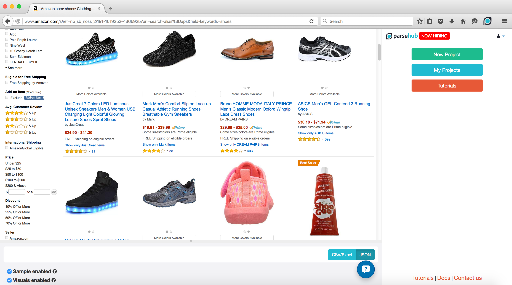New Version
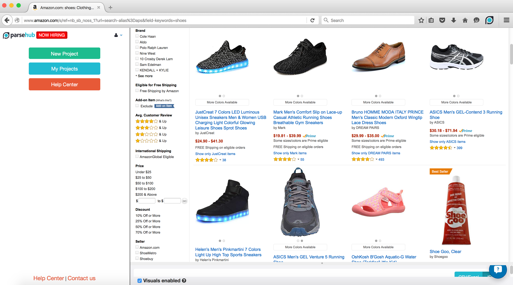2. Enter URL inside app before starting project
After opening the desktop app and clicking "Start New Project" you can type in the website that you want to scrape directly into the text box. ParseHub will start your project and the first template on this url. In the old version, you had to enter the url into the browser.

3. The tools are now accessed through commands.
Click the plus button on any command to create a new sub-command underneath it. (Hold shift to activate all plus buttons.)
In the older version the tool menu was visible on the right hand side. To save space and to make it more intuitive for you to learn the ParseHub commands hierarchy, you can now access the tool menu by clicking on the plus button of each command.
New Version Steps:
If you are making your first selection on a new template:
- Click on the blue plus button next to the "Select page" command.
- Choose the select tool from the tool menu.
- Click on any element on the page.
- The data is now selected for you and both the url and the text
for that piece of data is extracted for you.
If you want to make another selection on the same page just click on the plus button next to the "Select page" command and make another selection.
Sidebar when you choose the select tool from tool menu:
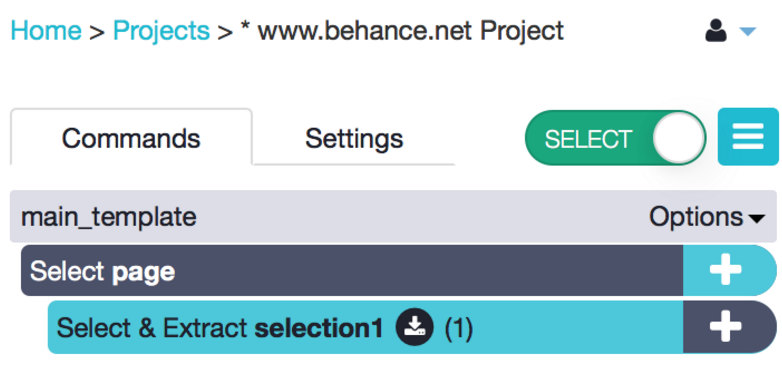
Sidebar after you select your element with select tool:
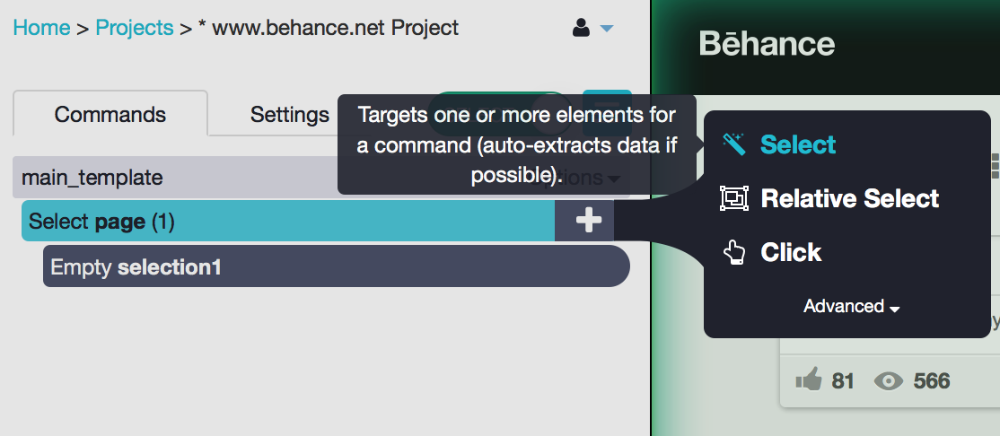
If you are selecting similar elements to relate to your first selection:
Let's say you want to select all of the portfolios on a website, and also the author for each portfolio.
- Click on the plus button next to the "Select page" command.
- From the tool menu choose the Select tool.
- Click on the first element on the page.
- Select the second element on the page.
- All of the elements are now selected for you. The Begin New Entry command is automatically created for you and two more commands that extract the text and the url of the elements are created.
- Click on the plus button next to the "Begin new entry in selection 1" command.
- From the tool menu choose the Relative select tool.
- Click on the element previously selected.
- Click on the new element that you want to select and associate with the previously selected elements. An arrow will appear to make the association.
- Both the url and the text of the newly selected elements will also be extracted and appear in your results.
When finished your sidebar will look like this:
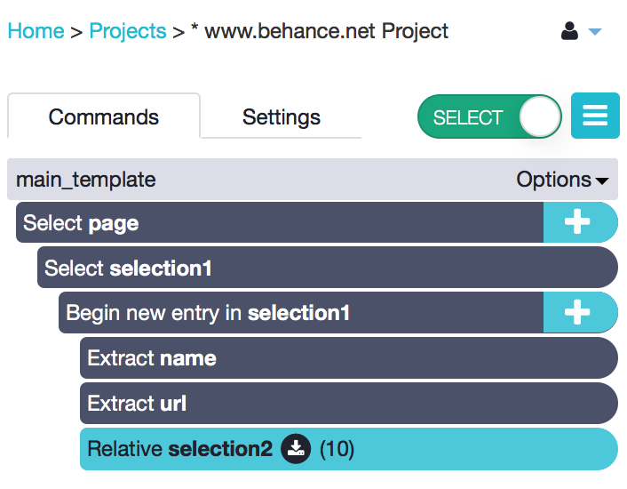
Your sample results should look similar to this:
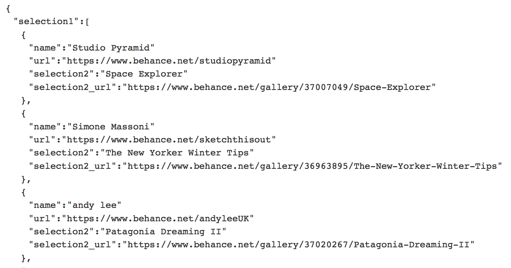
4. Easily switch between templates by clicking on the template name
In the old version you had to click on the dropdown of the template and select “Show Template”. Now, to easily switch between template you just have to double click on the template name.
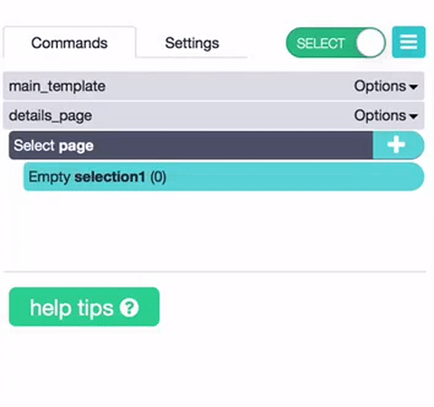
5. The List tool has been renamed to Begin New Entry
The Begin New Entry tool and command creates empty rows in Excel and empty JSON Objects for each selection. The Begin New Entry tool should be used if you want to create new buckets of space for your selections to go into. This command is usually created automatically for you.
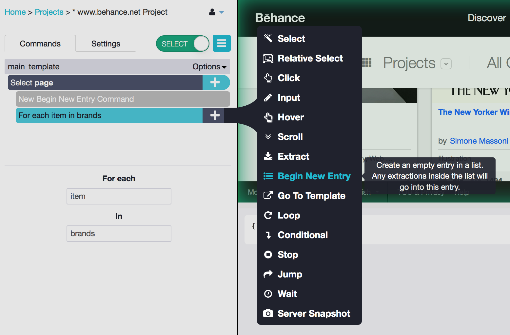
6. Change between browse and select mode with new toggle button.
In the past version, to browse your website without the interruption of ParseHub you had to use a tool from the tool menu. Now, if you want to do the same you need to toggle the browse & select button.
When the button is green and reads “select” you can go ahead and use ParseHub tools on the website.
When the button is white and grey and reads “browse” you can navigate and explore the website without ParseHub interfering.
Select mode - use ParseHub on website
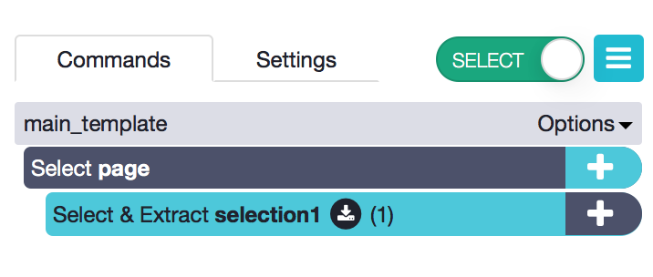
Browse mode - explore website without ParseHub

Tasks automated in new version
1. No more SHIFT key. Just keep clicking to select similar elements.
ParseHub automatically predicts similar elements on the page when you click on more than one element. You don't have to hold down the SHIFT key to select multiple elements on the page - just keep clicking.
New Version Steps:
- Select element on the page. To do this make sure to
choose the select tool from the tool menu by clicking on the plus button of any command. If you are starting a new project or template you can start from the "Select page" command. If you are building on an existing project, choose the appropriate command to make the selection under. - Select second similar element on the page
- The Begin New Entry command will be automatically created for you to group all of the selections and to create new rows in Excel or new objects in JSON for each selection to go into.
- Two extract commands will be created for you as well to extract the text and url.
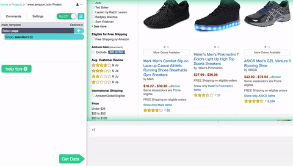
2. Text and url data is automatically extracted for every selection.
One command called the "Select & Extract" command is created for you when you make a selection of any element on the page. Two new columns in Excel will be created for you for the text and url data. Two new fields populated with the url and text data will be created in JSON as well.
New Version Steps:
- Select element on the page. The text and the url are now extracted for you and appear in the sample results.
The left side bar should look like this:
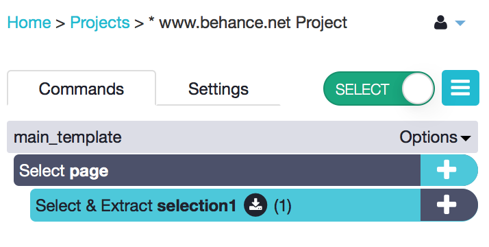
The sample results should look similar to this:
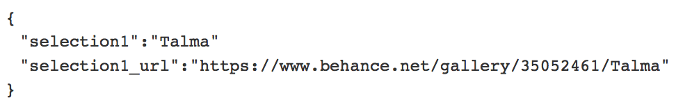
3. After selecting multiple elements, the Begin New Entry (List) command is created for you.
The list command and tool has been renamed to "Begin new entry". When you select multiple elements on the page, this command is automatically created for you. Both the text and the url of all of the selections will be extracted for you.
New Version Steps:
- Select element on the page.
- Select another similar element on the page.
- The list command - now called the “Begin new entry” automatically created for you. The text and url of the selection are now extracted for you and should appear in the sample results.
The left side bar should look like this:
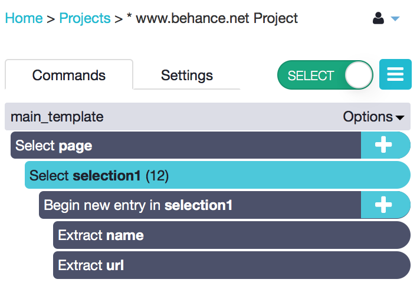
The sample results should look similar to this:
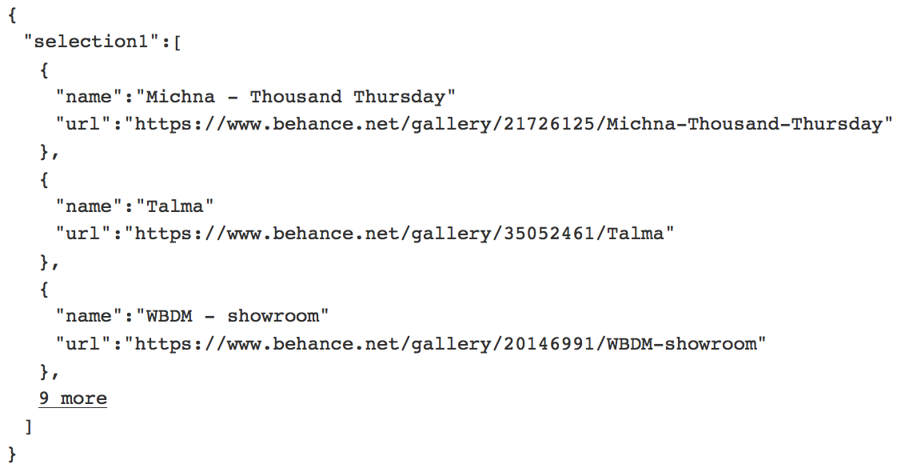
4. When selecting a text box, the Input command is created for you.
Select any input or text box with the Select tool. ParseHub will recognize if the element select is an input and will create the input command for you right away. All you have to do is type in the input text/value.
New Version Steps:
- Select the input or text box on the page. ParseHub automatically detects the input box and creates an input command for you.
- Start typing in the text that you want to appear in the input box right away, and it will appear both in the sidebar and on the website.
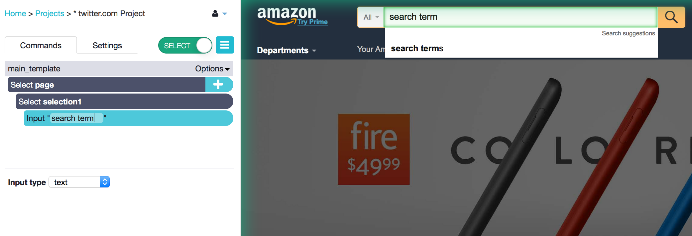
5. Wait command is automatically added when you use the click tool
Prior to the new version, you had to manually use the Wait tool and set a wait time when ParseHub clicks on elements or when ParseHub navigates through pages. You can still do this in the new version, but we made it much easier for you by adding a wait time automatically to all click and navigate commands.
You can change the time ParseHub waits (in seconds) after clicking two ways. You can change it in the pop-up right after choosing the Click tool from the tool menu. Or you can change it later in the options of the click command.
Change click wait time in pop-up:
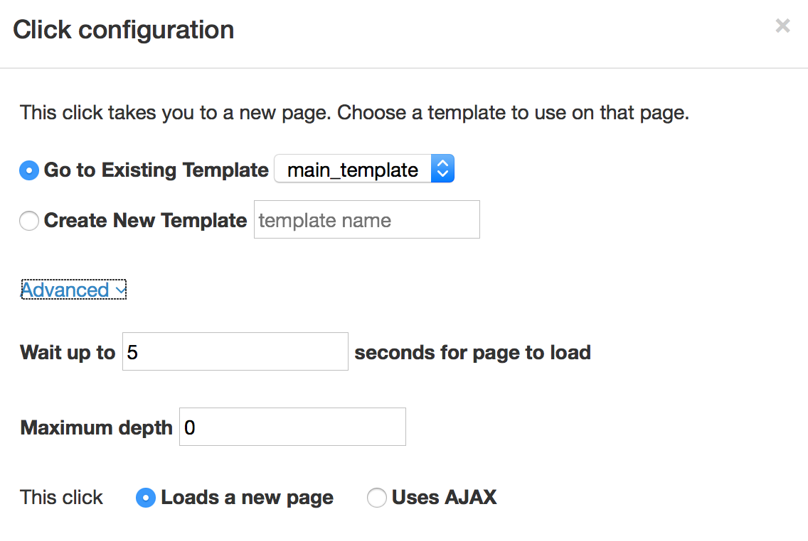
Change click wait time in the command options:
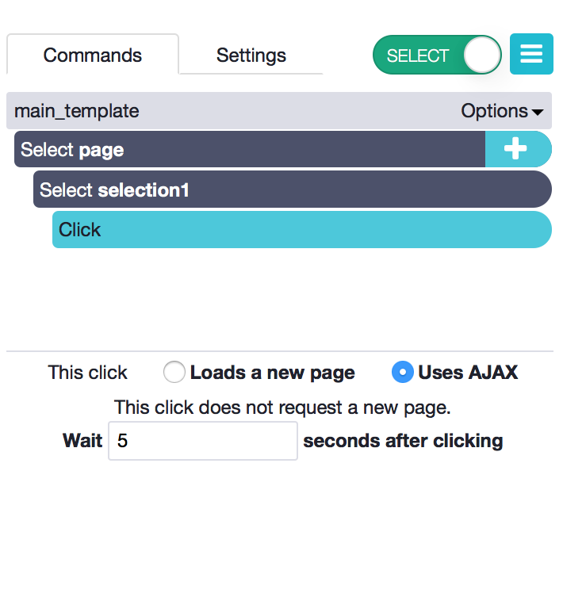
6. Get data behind a log-in form faster
It is much easier to log into a website with the new version of ParseHub. Many steps are automated for you. ParseHub detects when you select an input or text box for the username/email and the password.
New Version Steps:
- Click on the "Select page" command plus button.
- From the tool menu choose the Select tool.
- Click on the username or email field.
- The input command is automatically created for you in the side bar.
- Type in the email right into the input command. It should appear on the log in page.
- Click on the "Select page" command plus button.
- From the tool menu choose the Select tool.
- Click on the password field.
- The input command is automatically created for you in the side bar.
- Type in the password right into the input command. Note that it will be visible in the app interface.
- Click on the "Select page" command plus button.
- From the tool menu choose the Select tool.
- Click on the "Log In" button.
- Click on the "selection3" plus button command or whatever the selection is that targets the log in button.
- From the tool menu choose the "Advanced" toggle to display all of the tools. Choose the Click tool.
- Choose the "Create new template" option. Type in the name of the new template, such as "post log-in" and click "Create new template".
Side bar view of example log-in steps:
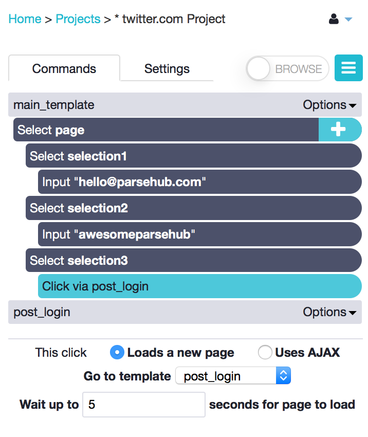
Pop-up to click on the "log-in" button:
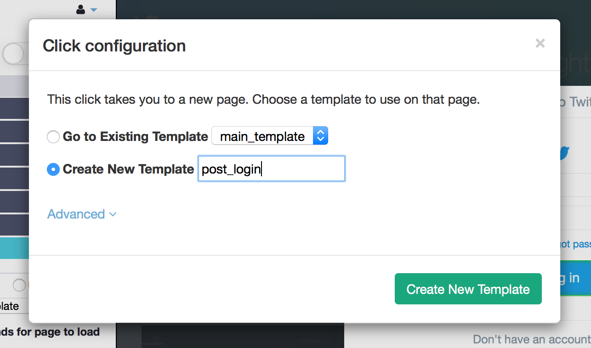
7. New way to get data from scrolling pages
In the old version you had to use the Loop tool to create a for loop and write code. In the new
version, this is done for you. All you have to do is select which part of the page you want to
scroll and use the Scroll tool to indicate the number of times you want ParseHub to scroll down
the page.
New Version Steps:
- Click on the "Select page" command plus button.
- From the tool menu, choose the "Select" tool.
- Select the container that holds all of the content that you want to scroll. To do this you need
to refine what is highlighted on the page. - Hold down the CTRL key (or the CMD key on a Mac) and press the number 1 on your keyboard. You will see the highlighted selection expand on the page. When you see a highlight around the entire container that holds all of your content, click on the highlight to make a selection.
- The Select & Extract selection1 command should appear for you in the left side bar.
- Click on the + button next to the selection1 command that selects the entire container. Click on the "Advanced" section to expand the tool menu. Choose the Scroll tool from the tool menu.
- Click on the "align to bottom"' checkbox in the scroll command options.
- Tell ParseHub how many times you want to scroll down the page by replacing the "Repeat 1 times" text.
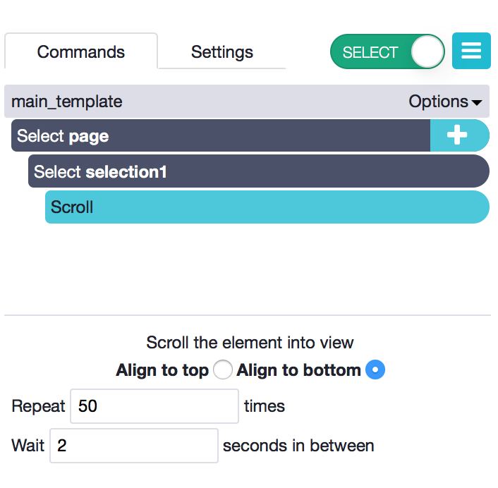
Pagination, navigation & switching templates
1. No more Navigate tool. Use the click tool for pagination (to scrape multiple pages).
Navigate used to be a very widely used tools in the old version of ParseHub. In the new version, the click and navigate tools were combined to just be the click tool. If you want to navigate to a new page or to open a new page you should use the click tool. This tool should be used if you have a "next page" button.
New Version Steps:
- Click on the plus button in the "Select page" command. From the tool menu select the Select tool.
- Find the "Next Page" button on the website and click on it. A new "Select and Extract" command is created for you.
- Click on the plus button in the "Select Extract" command and choose the Click tool.
- ParseHub will automatically detect that the click does not take you to a new type of page. You will be asked to stay on the same template. Choose to stay on the same template.
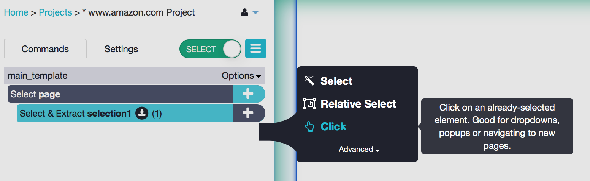
2. Navigate through website and open new pages with Click tool.
The click tool should also be used if you want to open new pages behind links. For example, if you want to select all of the categories and open the categories urls to scrape more information. You should also use click if you have a list of products or businesses and if you want to open the details/profile pages behind each. You only need to use the click tool one time and it will be applied to all of the selections you previously made.
Follow the examples below to open a new page for multiple links that you select.
- Click on the plus button in the "Select page" command. From the tool menu select the Select tool.
- Click on the first element on the page (such as one of the products).
- Click on the second element on the page (another product).
- The Begin new entry command and two Extract commands that extract the url and text of your selection will be extracted for you.
- Click on the plus button in the "Begin new entry in selection1" command. From the tool menu select the Click tool.
- In the pop-up select "Create new template" and enter the template in the text box, followed by clicking the "Create new template" button.
- A new template will be created for you and the new page will be opened for you.
Pop-up to open new page on click:
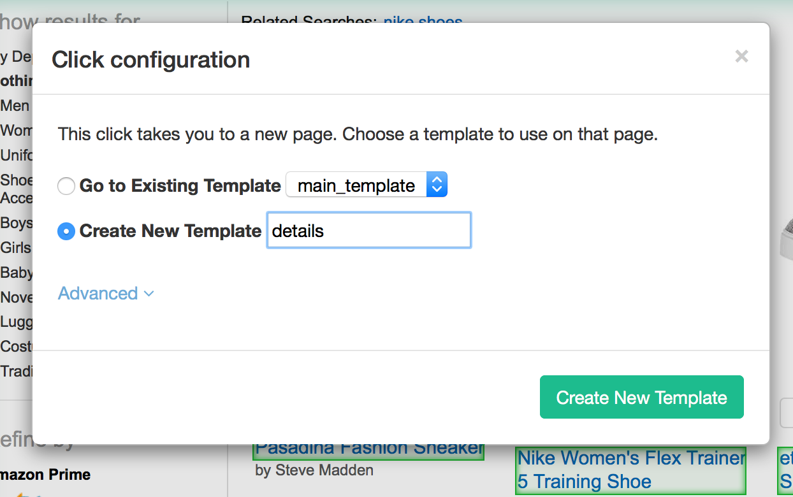
3. Go to any new url with the Go to Template tool
- Click on the plus button in the "Select page" command or any other command from which you want to use the Go To Template tool.
- From the tool menu select the Go To Template tool.
- In the pop-up check mark "Go to URL" and add the url you want to go to within single quotation marks. For example - 'https://inbound.org'. You can also add a query to the end of the url if you want to dynamically change the middle or end of the url.
- Check mark the "Create New Template" text box and enter the name of the template that you want to create. Click "Create New Template".
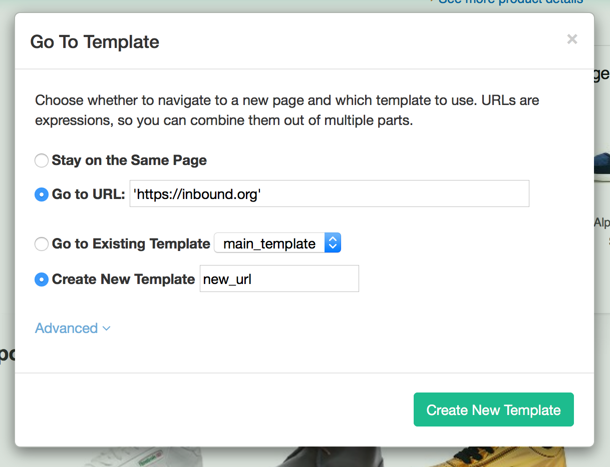
We are here to help you get started with the new version of ParseHub. Contact us and let us know what we can improve on at anytime. Bug reports and feature requests are welcome from all of you keen souls.